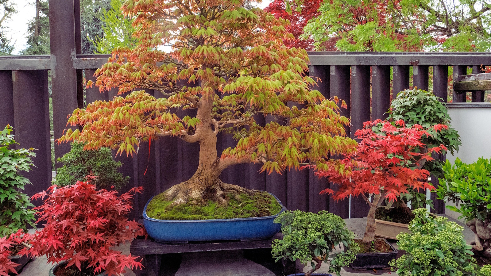
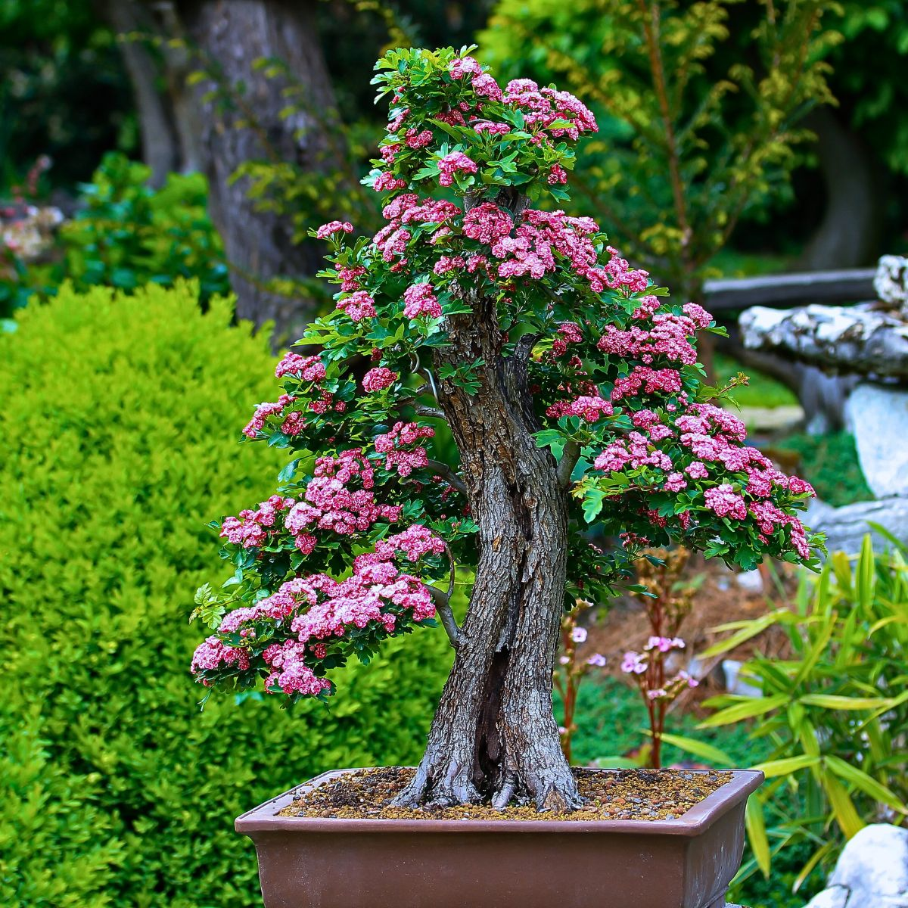
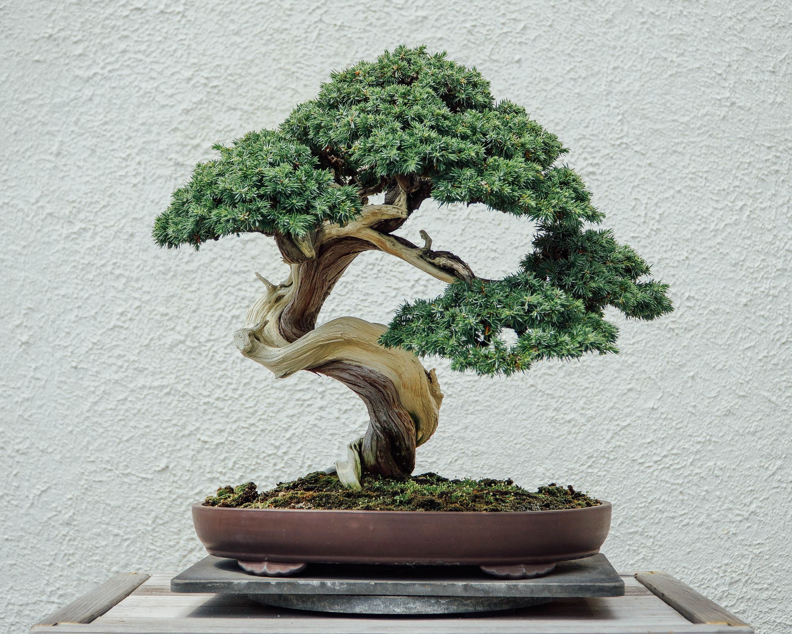
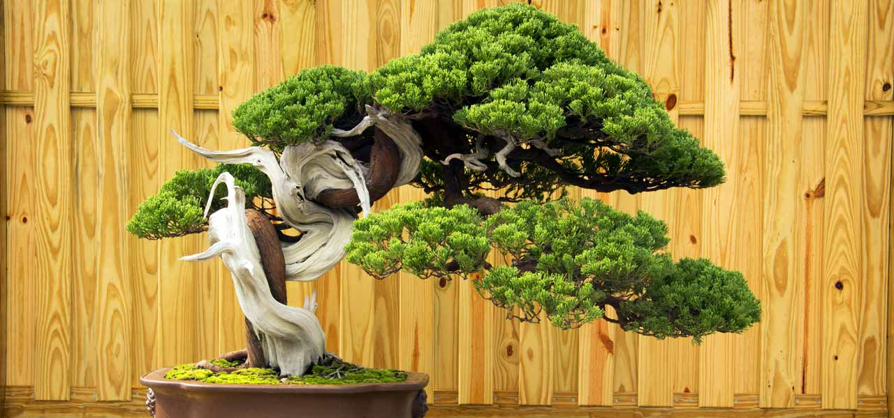

Bonsai is an art that has been studied and refined for centuries, but don't let that scare you off. With a little guidance, you're perfectly capable of growing your very own Bonsai trees without a mystical green thumb. Make sure you choose a tree species that is suited for the climate in your area and stick to the basic care guidelines. In this section, I'll explain how to start growing Bonsai and introduce you to the three main techniques: cultivation, styling, and care.


